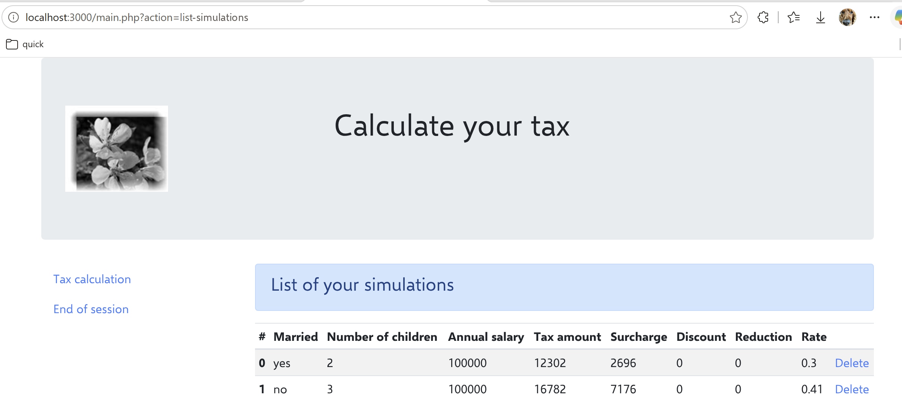
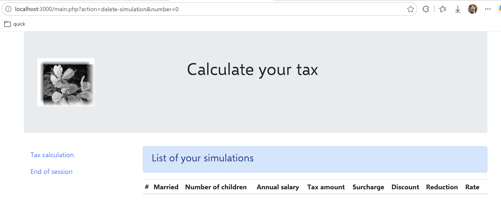

9. Fallstudie: Der Steuerberechnungsserver in NestJS

9.1. Rückblick auf die Anforderung
Der zu portierende Server ist ein Einkommensteuer-Berechnungsserver (PHP) (siehe Einführung in die Sprache PHP7 anhand von Beispielen), der in Schichten aufgebaut ist (Config / Entities / Model-DAO-Business / Controllers / Responses / Views), mit einem Front-Controller (main.php), der eingehende Anfragen – alle in der Form einer URL (main.php?action=...) – anhand der Aktion an den passenden Controller weiterleitet. Ziel der Portierung war es, diese MVC-Architektur in NestJS unverändert beizubehalten, Aktion für Aktion und Statuscode für Statuscode, damit sie mit dem bereits für den PHP-Server geschriebenen HTML/TypeScript-Client kompatibel bleibt.
9.2. Die MVC-Architektur wird übernommen
Die Zuordnung zwischen den beiden Servern ist direkt:
- Config/config.json ↔ ConfigService;
- Entities/*.php ↔ entities/*.entity.ts (TaxAdminData, Simulation);
- Model/ServerDao*.php ↔ ServerDaoService (Schicht [DAO], Kapitel 5);
- Model/ServerBusiness.php ↔ ServerBusinessService (Schicht [business], Umfang Zeile für Zeile);
- Controllers/*Controller.php (einer pro Aktion) ↔ ein Aktions-Controller pro TypeScript-Klasse, dynamisch ausgewählt über eine Registry (ActionsRegistryService);
- Responses/*Response.php ↔ ResponseSenderService (JSON, XML) und HtmlViewRendererService (HTML);
- Views/*.php ↔ EJS-Templates (views/*.ejs), mit demselben Bootstrap-Layout.
Hinweis: Alle Aktionen dieses Servers laufen über eine einzige Route, http://localhost:3000/main.php; der Name der angeforderten Aktion wird immer als Query-String-Parameter übergeben, ?action=action-name – niemals im URL-Pfad. Das ist ein bewusstes URL-Design, das sich von den Beispielen der vorherigen Kapitel unterscheidet (Aktionen [/a01], [/m01] ..., die über Pfadsegmente geroutet werden) und das hier genau so beibehalten wird, wie es auf dem ursprünglichen PHP-Server war, um mit dem bereits geschriebenen Client kompatibel zu bleiben.
9.3. Dateistruktur des Projekts
Bevor wir auf die einzelnen Schichten im Detail eingehen, hier die vollständige Verzeichnisstruktur des Projekts nestjs-case-study, wie sie nach dem Ausführen von npm install aussieht (der Ordner dist/ , der von npm run build erzeugt wird, und das Verzeichnis node\_modules/ werden nicht angezeigt):
Die Rolle der einzelnen Elemente:
- .env / .env.example – Umgebungsvariablen (Port, Sitzungsgeheimnis, MySQL- und TAX_DATA_SOURCE-Parameter usw.), gelesen von ConfigService; .env wird nicht versioniert (.gitignore); .env.example dient als zu kopierende Vorlage (cp .env.example .env);
- .gitignore – schließt node_modules/, dist/, .env, und die Logs des Repositorys aus;
- README.md – Projektdokumentation (Installation, Zuordnung zwischen PHP und NestJS, kommentierte Verzeichnisstruktur): Dieses Kapitel fasst diesen Inhalt zusammen und erweitert ihn;
- create_dbtaxes.sql – Skript zum Erstellen der MySQL-Datenbank dbtaxes-2019 (Tabellen tbbrackets, tbconstants ..., wird nur verwendet, wenn TAX_DATA_SOURCE=mysql gilt);
- nest-cli.json, tsconfig.json, tsconfig.build.json – Konfiguration der CLI, von NestJS und des TypeScript-Compilers, bereits in den vorherigen Kapiteln besprochen;
- package.json – Abhängigkeiten (ejs, express-session, mysql2, js2xmlparser, dotenv ...) und npm-Skripte (start, start:dev, build);
- data/tax-admin-data.json – Ersatzdatensatz mit den Steuerdaten, verwendet, wenn TAX_DATA_SOURCE=json gilt: MySQL muss nicht installiert werden, um den Server zu testen;
- Logs/ – Verzeichnis für die Anwendungsprotokolle (logs.txt), beschrieben von LoggerService; wird beim Start automatisch angelegt, falls es noch nicht existiert;
- public/Resources/logo.jpg – statisches Bild, unverändert ausgeliefert von app.useStaticAssets(...) in main.ts, verwendet vom Banner in den HTML-Views;
- views/ (im Projektstamm) – die EJS-Templates und ihre Partials, weiter unten im Abschnitt „HTML-Seiten erstellen“ im Detail beschrieben;
- src/main.ts – Einstiegspunkt: startet den NestJS-Server (siehe unten);
- src/app.module.ts – Wurzelmodul: deklariert MainController als einzigen Controller sowie alle Provider der Anwendung;
- src/main.controller.ts – der Front-Controller, bereits weiter oben beschrieben;
- src/config/ – die Anwendungskonfiguration (ConfigService), weiter unten im Detail beschrieben;
- src/entities/ – die Datenklassen (Simulation, TaxAdminData, TaxException), weiter unten im Detail beschrieben;
- src/model/ – die Schichten [DAO] und [business] ;
- src/actions/ – ein Controller pro Aktion, die gemeinsame Schnittstelle ActionController, und die Registry ActionsRegistryService;
- src/responses/ – Antwortgenerierung (JSON/XML) und CORS-Behandlung (ResponseSenderService);
- src/views/ – Hinweis: Nicht zu verwechseln mit dem Verzeichnis
views/im Stammverzeichnis. Dieser Ordner enthält nur TypeScript: den Aufbau der Anzeigemodelle (view-models.ts) und die Auswahl und das Rendern der View (EJS) (html-view-renderer.service.ts); - src/session/ – TypeScript-Typisierung für die Express-Sitzung (session.types.ts);
- src/utilities/ – Logging (LoggerService);
- src/filters/ – reserviertes, derzeit leeres Verzeichnis: in dieser Version des Projekts noch nicht verwendet.
Zwei Dateien verdienen eine nähere Erwähnung: src/main.ts und src/app.module.ts, beide spezifisch für dieses Projekt (über das in den vorherigen Kapiteln behandelte Framework hinaus). Auszug aus src/main.ts:
Kommentieren wir diesen Code:
- Zeile 4: app.useStaticAssets(join(process.cwd(), 'public')); – liefert die Dateien im Ordner public/ unverändert aus (hier public/Resources/logo.jpg) über eine statische Route, ohne einen NestJS-Controller zu durchlaufen;
- Zeile 6: app.use(session({...})); – installiert die Middleware express-session direkt auf der NestJS-Anwendung: app.use(...) funktioniert hier genau wie bei einer gewöhnlichen Express-Anwendung, auf der NestJS aufbaut – dadurch bekommt request.session in MainController und in jedem Aktions-Controller seinen Sinn;
- Zeile 13: const port = Number(process.env.PORT ?? 3000); – der Lauschport stammt wie die übrigen konfigurierbaren Einstellungen aus einer Umgebungsvariablen (in der Datei .env ), mit 3000 als Standardwert.
src/app.module.ts ist das Wurzelmodul (aus den vorherigen Kapiteln bereits bekannt): Es deklariert MainController als einzigen Controller und führt alle Provider der Anwendung in seinem Array providers auf – die Services (ConfigService, LoggerService, ServerDaoService, ServerBusinessService, ResponseSenderService, HtmlViewRendererService, ActionsRegistryService) und die acht Aktions-Controller, die sich alle über denselben Dependency-Injection-Mechanismus gegenseitig injizieren lassen.
9.4. Der Front-Controller
Ein einziger Controller (NestJS, MainController) empfängt alle Anfragen an /main.php?action=... (@All('main.php')): Er ruft den Parameter action ab, prüft die für alle Aktionen gemeinsamen Vorbedingungen (bekannte Aktion, initialisierte Sitzung, authentifizierter Benutzer) und delegiert dann an den Controller der jeweiligen Aktion.
Auszug aus src/main.controller.ts:
Kommentieren wir diesen Code:
- Zeile 1: [@Controller()] — dieser Dekorator kennzeichnet die Klasse als NestJS-Controller -- hier ohne Argumente verwendet, legt er kein gemeinsames Präfix fest: Die weiter unten an der Methode selbst angegebene Route bestimmt das genaue Präfix;
- Zeile 3: [constructor(...)] — Konstruktorinjektion von drei @Injectable()-Providern: dem Konfigurationsservice, dem Service zum Senden der Antwort und der Aktionsregistry -- NestJS instanziiert und stellt sie automatisch bereit, ohne dass irgendwo
new ConfigService()geschrieben werden muss; - Zeile 9: [@All('main.php')] —
@Allist ein Routen-Dekorator, der die folgende Methode mit allen HTTP-Methoden (GET, POST, PUT, DELETE ...) für die angegebene URL verknüpft — hier /main.php (dieser vom PHP-Server übernommene Name bezeichnet in NestJS lediglich einen URL-Pfad und keine tatsächlich ausgeführte PHP-Datei); dadurch kann derselbe Controller mit einer einzigen deklarierten Route sowohl lesende Aktionen (GET, z. B. init-session) als auch solche behandeln, die Daten senden (POST, z. B. calculate-tax); - Zeile 10: [@Req() request: Request, @Res() response: Response] — zwei Parameter-Dekoratoren, die wir bereits kennengelernt haben: @Req() injiziert das vollständige Request-Objekt (HTTP-Methode, Header, Query, Body, Session ...), und @Res() injiziert das Express-Response-Objekt, das die volle Kontrolle über die Rückgabe bietet — hier notwendig, weil dieser Controller je nach Situation den HTTP-Statuscode und das Antwortformat (JSON, XML oder HTML) selbst wählen muss, was eine einfache
return-Anweisung nicht so präzise erlauben würde; - Zeile 11: [const action = String(request.query.action ?? '').toLowerCase();] — der Parameter
actionwird manuell aus request.query gelesen — da wir uns für@Req()statt des im vorigen Kapitel gezeigten Dekorators@Query('action')entschieden haben, muss der Code den Wert selbst aus dem Request-Objekt auslesen; - Zeile 21: [const controller = this.actionsRegistry.get(action);] — sobald die Vorbedingungen geprüft sind, verarbeitet MainController die Aktion nicht selbst: Er ermittelt anhand des Aktionsnamens den zugehörigen Aktions-Controller (siehe nächster Abschnitt) und delegiert die Arbeit an ihn.
Hinweis: Dieser Controller verwendet @Req() und @Res() statt der einzelnen Dekoratoren (@Query(), @Body() usw.) aus dem vorigen Kapitel: Er benötigt vollen Zugriff auf den Request (Methode, alle Parameter) und die vollständige Kontrolle über die gesendete Antwort (Wahl von Statuscode und Format) — genau wie es main.php mit den Symfony-Objekten Request und Response tat.
9.5. Ein Aktions-Controller
Jede Aktion besitzt einen eigenen Controller, der ein gemeinsames Interface ActionController implementiert — das TypeScript-Pendant zum PHP-Interface InterfaceController. Hier eine vereinfachte Version des Controllers für die Aktion [calculate-tax]:
Auszug aus src/actions/calculate-tax.controller.ts:
Gehen wir diesen Code Schritt für Schritt durch:
- Zeile 1: [@Injectable()] — der erste wichtige Punkt: CalculateTaxController ist ein gewöhnlicher Provider (@Injectable()), kein NestJS-Controller — er besitzt weder @Controller() noch Routen (@Get, @Post ...); nur MainController (siehe oben) wird vom HTTP-Router in NestJS erkannt;
- Zeile 2: [export class CalculateTaxController implements ActionController] — diese Klasse implementiert das projektspezifische Interface ActionController (definiert in action-controller.interface.ts), das nur eine Methode verlangt: execute(...) -- dies ist eine Projektkonvention, kein NestJS-Mechanismus;
- Zeile 3: [constructor(...)] — Konstruktorinjektion von zwei Services: DAO ([DAO]-Schicht, Zugriff auf die Steuerdaten) und Geschäftslogik ([business]-Schicht, reine Berechnung);
- Zeile 8: [async execute(config, request, session): Promise<ActionResult>] — die Methode, die von MainController.handle() (controller.execute(...), siehe oben) aufgerufen wird -- ihre Parameter sind keine NestJS-Dekoratoren (@Body(), @Session() ...), da diese Methode nie direkt vom HTTP-Router aufgerufen wird: MainController übergibt ihr Request und Session, die er selbst über @Req() erhalten hat, bereits manuell;
- Zeile 12: [const taxAdminData = await this.dao.getTaxAdminData();] — ruft die für die Berechnung benötigten Steuerdaten (Stufen, Schwellenwerte) über die im vorigen Kapitel vorgestellte [DAO]-Schicht ab;
- Zeile 19: [return { statusCode: 200, status: 300, content: { response: result }, headers: {} };] — der zweite wichtige Punkt: Was
execute()zurückgibt, wird nicht unverändert an den Browser gesendet — es ist die projektspezifische StrukturActionResult(statusCode, status, content, headers), die von MainController ausgewertet und dann an ResponseSenderService weitergegeben wird, der die tatsächlich gesendete HTTP-Antwort erzeugt (JSON, XML oder HTML, je nach Sitzungstyp — siehe unten).
Diese Aktion wird durch eine POST-Anfrage an http://localhost:3000/main.php?action=calculate-tax ausgelöst, wobei die drei Parameter „married“, „children“ und „salary“ im Request-Body (und nicht in der URL) enthalten sind — genau das prüft execute() als Erstes, noch bevor es diese Parameter liest.
9.6. Die übrigen Aktions-Controller
Jede Aktion besitzt einen eigenen Controller, und alle implementieren dasselbe Interface (das TypeScript-Pendant zum PHP-Interface InterfaceController) — Auszug aus src/actions/action-controller.interface.ts:
und alle werden über eine Registry anhand ihrer Aktionsnamen identifiziert, die ihrerseits per Konstruktor in MainController injiziert wird — Auszug aus src/actions/actions-registry.service.ts:
Gehen wir diesen Code Schritt für Schritt durch:
- NestJS instanziiert jeden der acht Aktions-Controller (mithilfe von @Injectable()) und übergibt sie alle, bereits konstruiert, an den Konstruktor von ActionsRegistryService — der sie einfach in einem assoziativen Array speichert, das nach Aktionsnamen indiziert ist;
- diese Tabelle (this.registry) erfüllt genau denselben Zweck wie die Tabelle [actions] in Config/config.json auf der PHP-Seite, jedoch ohne jemals etwas manuell zu instanziieren: has(action) und get(action) sind die einzigen beiden Methoden, die von MainController verwendet werden.
Die Aktion [calculate-tax] wurde oben bereits ausführlich beschrieben. Hier sehen Sie, was die anderen sieben Aktions-Controller jeweils auszeichnet:
- init-session.controller.ts — initialisiert den Antworttyp der Sitzung (session.type = json, html oder xml); muss die allererste aufgerufene Aktion sein (sie ist die einzige, die MainController von der Prüfung „keine aktuelle Sitzung“ ausnimmt); verlangt die Methode GET und genau zwei Request-Parameter (action, type);
- authenticate-user.controller.ts — prüft das gesendete Login/Passwort-Paar anhand der Liste in config.users; bildet seinen Statuscode, indem es Fehlerbits addiert (status += 2 wenn username fehlt, status += 4 wenn password fehlt) — dieselbe numerische Logik wie beim ursprünglichen PHP-Validator;
- list-simulations.controller.ts — der einfachste von allen: gibt session.simulations ?? [] zurück, ohne jegliche Berechnung;
- delete-simulation.controller.ts — führt eine Reihe von Prüfungen durch (Methode/Anzahl der Parameter, Vorhandensein des Parameters „number“, numerische Syntax, Index innerhalb der Array-Grenzen), wobei der Statuscode bei jedem erfolgreichen Schritt bitweise aufgebaut wird, und ruft dann simulations.splice(number, 1) auf und speichert das Array erneut in der Session;
- display-tax-calculation.controller.ts — noch kürzer als list-simulations: tut nichts weiter, als den Statuscode 800 zurückzugeben, damit der Client ohne serverseitige Verarbeitung einfach zu einer anderen View wechselt (zurück zum Berechnungsformular);
- admin-data.controller.ts — delegiert direkt an ServerDaoService.getTaxAdminData() und fängt TaxException ab, um den Fehlerstatus 1041 zurückzugeben; zusammen mit
calculate-taxist er einer von nur zwei Aktions-Controllern, die die[DAO]-Schicht in ihren Konstruktor injizieren;
Der Fall von src/actions/end-session.controller.ts verdient wegen einer klassischen Express-Session-Falle eine genauere Betrachtung:
Kommentieren wir diesen Code:
- Zeile 9: const type = session.type; — wir speichern den Antworttyp (json/html/xml), bevor wir die Sitzung zerstören, da wir ihn in der neuen Sitzung wiederherstellen müssen;
- Zeile 10: await new Promise<void>((resolve) => session.regenerate(() => resolve())); — eine knifflige Stelle dieses Controllers: session.regenerate(callback), bereitgestellt von express-session, ist eine Callback-Methode und kein Promise; deshalb verpacken wir sie in ein Promise, um sie wie den restlichen Code mit await abwarten zu können;
regenerate()leert die aktuelle Sitzung und weist ihr eine brandneue Kennung zu (das Äquivalent zur Sitzungszerstörung in Symfony); - Zeile 11: request.session.type = type; — der zweite knifflige Punkt: Nach
regenerate()verweistrequest.sessionauf eine brandneue Session-Instanz; die alte session-Referenz, die in den Parametern vonexecute()vor dem Aufruf erfasst wurde, ist nun verwaist — deshalb wird der Typrequest.sessionstattsessionneu zugewiesen; andernfalls ginge er unbemerkt verloren.
9.7. Die [DAO]-Schicht
ServerDaoService (§5.1) stellt der Geschäftsschicht Steuerdaten (Stufen, Schwellenwerte) bereit, je nach Konfigurationsparameter entweder aus einer JSON-Datei (nützlich für Tests ohne Datenbank) oder aus MySQL mit mysql2.
Auszug aus src/model/server-dao.interface.ts — ein minimaler Vertrag, eine einzige Methode, die jede Implementierung der [DAO]-Schicht bereitstellen muss:
Auszug aus src/model/server-dao.service.ts, der einzigen Implementierung dieses Vertrags in diesem Projekt:
Kommentieren wir diesen Code:
- async getTaxAdminData(): Promise<TaxAdminData> { if (taxDataSource === 'mysql') ... } — die Entscheidungslogik passt in eine einzige Zeile: Je nach config.taxDataSource (gelesen aus der Umgebungsvariablen TAX_DATA_SOURCE) werden die Daten entweder aus der JSON-Datei oder aus MySQL geholt, aber der für den Rest der Anwendung bereitgestellte Vertrag (IServerDao) bleibt unverändert — CalculateTaxController und AdminDataController wissen nicht, welche Quelle tatsächlich verwendet wird;
- getTaxAdminDataFromJson() — liest und parst data/tax-admin-data.json synchron (fs.readFileSync); jeder Fehler (fehlende Datei, ungültiges JSON) wird abgefangen und als TaxException mit einer expliziten Meldung protokolliert — niemals als rohe Node-Exception, die nicht korrekt an den Client zurückgegeben würde;
- getTaxAdminDataFromMysql() — öffnet bei jedem Aufruf mit mysql2/promise eine MySQL-Verbindung (es wird kein Connection-Pool wiederverwendet: passend zum fehlenden Redis-Cache, auf den in README hingewiesen wird, prüft jede Abfrage alles neu); führt die beiden SQL-Abfragen aus (Stufen, dann Konstanten), rekonstruiert aus den gelesenen Zeilen ein TaxAdminData und schließt die Verbindung systematisch in einem
finally-Block , unabhängig davon, ob das Lesen erfolgreich war oder nicht; - beide privaten Methoden geben denselben Typ zurück (Promise<TaxAdminData>), wodurch getTaxAdminData() eine einfache Fassade ohne eigene Geschäftslogik bleiben kann.
9.8. Die [business]-Schicht
ServerBusinessService kennt weder HTTP noch Sessions noch die Datenbank: Er ist eine zeilenweise Portierung der Steuerberechnung des PHP-Servers, rein und unabhängig vom Rest testbar.
Auszug aus src/model/server-business.service.ts:
- Zeile 1: [@Injectable()] — wieder derselbe Dekorator, aus demselben Grund wie an anderen Stellen dieses Kapitels: Ohne ihn könnte NestJS ServerBusinessService weder instanziieren noch in CalculateTaxController oben injizieren;
- Zeile 2: [export class ServerBusinessService {] — ab hier ist der Code, abgesehen von diesem ersten Dekorator, nicht mehr NestJS-spezifisch: calculateTax(...) und getTaxableIncome(...) sind gewöhnlicher TypeScript-Code — eine zeilenweise Portierung des PHP-Algorithmus, ohne HTTP und ohne Datenbank.
9.9. Die Anwendungskonfiguration
src/config/config.service.ts fasst in einem einzigen NestJS-Service zusammen, was auf der PHP-Seite zuvor auf Config/config.json und Config/database.json verteilt war — mit dem erwarteten Unterschied, dass sensible Konfigurationswerte (Passwörter, Session-Secrets) nun aus Umgebungsvariablen (.env-Datei) stammen und nicht aus einer versionierten JSON-Datei:
Kommentieren wir diesen Code:
- actions: { ... } — diese Tabelle wird ausschließlich zu Dokumentationszwecken beibehalten (sie beschreibt die ursprüngliche Architektur getreu): Das eigentliche Routing der Aktionen beruht nicht auf ihr, sondern wird per Dependency Injection in ActionsRegistryService abgewickelt;
- taxDataSource: (process.env.TAX_DATA_SOURCE as ...) ?? 'json' — gelesen aus der Umgebungsvariablen TAX_DATA_SOURCE, wählt dieses Feld die Quelle der Steuerdaten, die von ServerDaoService verwendet wird (siehe oben);
- views: { ... } — ordnet jedem EJS-Template-Namen die Liste der Antwortstatus zu, die es anzeigen sollen (zum Beispiel view-tax-calculation für die Status 200, 300, 341, 350, 800); HtmlViewRendererService (siehe „HTML-Seiten erstellen“) verwendet diese Tabelle, um die zu rendernde View auszuwählen;
- errorsView: 'view-errors' — die Fallback-View, die immer dann angezeigt wird, wenn keiner der views-Einträge zum aktuellen Status passt;
- letzte Zeile: if (!fs.existsSync(logsDir)) { fs.mkdirSync(logsDir, { recursive: true }); } — Bei der Erzeugung legt der Service selbst den Ordner Logs/ an, falls er noch nicht existiert, damit LoggerService jederzeit hineinschreiben kann, ohne sich je darum kümmern zu müssen.
9.10. Entitäten, Session und Logs
src/entities/ enthält drei Datenklassen, portiert aus Entities/*.php. Auszug aus simulation.entity.ts — einer Berechnungssimulation, gespeichert in session.simulations:
Auszug aus tax-admin-data.entity.ts — den Steuerstufen und Berechnungskonstanten, die von der [DAO]-Schicht gelesen werden:
und tax-exception.ts — eine typisierte Anwendungs-Exception, die von der [DAO]-Schicht bei einer unzugänglichen Datenquelle ausgelöst wird (nicht lesbare JSON-Datei, fehlgeschlagene MySQL-Verbindung ...) und von den Action-Handlern abgefangen wird, die sie benötigen (calculate-tax, get-admindata):
src/session/session.types.ts ist kein Service: Es ist eine Typdeklaration, die das Modul express-session erweitert, damit TypeScript auf die anwendungsspezifischen Inhalte (Sitzungstyp, authentifizierter Benutzer, gespeicherte Simulationen) zugreifen kann:
Hinweis: Diese Technik — die Modulerweiterung (declare module 'express-session') — ermöglicht es, request.session.simulations oder session.user an anderer Stelle im Projekt zu schreiben, ohne dass der TypeScript-Compiler einen Fehler meldet; AppSession, der tatsächliche Typ von req.session , der in allen Aktions-Controllern verwendet wird, leitet sich direkt davon ab.
Schließlich protokolliert src/utilities/logger.service.ts alles, was der Server tut (neue Anfrage, angeforderte Aktion, gewählter Controller, zurückgegebene Antwort usw.), in Logs/logs.txt:
Hinweis: Das Schreiben erfolgt im Best-Effort-Modus (asynchron mit fs.appendFile, ohne auf das Ergebnis zu warten oder es zu prüfen): Ein Problem beim Schreiben der Logs darf nie dazu führen, dass eine Anfrage fehlschlägt — genau der Ansatz von Utilities/Logger.php auf der PHP-Seite.
9.11. Die Antworten in JSON, XML und HTML
ResponseSenderService erzeugt die JSON- oder XML-Antwort (mit der Bibliothek js2xmlparser), bildet die CORS-Behandlung des ursprünglichen PHP-Servers nach (Access-Control-Allow-*-Header nur für den Origin localhost) und behandelt den Sonderfall der Methode OPTIONS (CORS-Preflight).
Auszug aus src/responses/response-sender.service.ts, der diese Antwort tatsächlich erzeugt:
Kommentieren wir diesen Code:
- switch (type) { ... } — die drei Antwortformate werden hier und nur hier erzeugt: JSON mit JSON.stringify, XML mit der Bibliothek js2xmlparser (die das Objekt
contentin ein XML-Dokument mit dem Element <root> als Wurzel umwandelt) und HTML durch vollständige Delegation an HtmlViewRendererService.render(...), näher beschrieben weiter unten; - this.logger.write(
response=${JSON.stringify(content)}); — auch im HTML-Modus wird der Anwendungsinhalt der Antwort (content) protokolliert, niemals die gesamte erzeugte HTML-Seite — wie es HtmlResponse.php tat; - in sendResponse(...) bildet die Prüfung origin.startsWith('http://localhost') || origin.startsWith('https://localhost') die CORS-Richtlinie des ursprünglichen PHP-Servers exakt nach (ParentResponse::sendResponse): Nur Origins mit localhost erhalten die Access-Control-Allow-*-Header; niemals eine beliebige Domain;
- if (method === 'options') { content = ''; statusCode = 200; } — Sonderfall des CORS-Preflights: Bei einer OPTIONS-Anfrage zählen nur die Header; der Antwort-Body wird geleert und der Statuscode unabhängig von der angeforderten Verarbeitung auf 200 gesetzt.
Für den Modus type=html bildet HtmlViewRendererService die View-Auswahllogik des PHP-Servers nach: Jedem Antwortstatus entspricht eine View, die aus einer Konfigurationstabelle ausgewählt wird, mit Rückfall auf eine generische Fehlerseite, wenn keine View passt. Jede View ist ein EJS-Template (views/*.ejs), eine direkte Übersetzung der ursprünglichen PHP-Dateien, gespeist von einem „Anzeige-Template“, das von einer eigenen Funktion erzeugt wird — dasselbe Prinzip wie das Paar getModelForThisView(...) / PHP-View, mit dem zusätzlichen Vorteil des automatischen Escapings der angezeigten Werte.
Hinweis: Für diejenigen, die NestJS schon anderswo kennengelernt haben: Dieses HTML-Rendering verwendet nicht den von NestJS bereitgestellten Dekorator @Render(), um eine Controller-Methode mit einer View-Engine (EJS, Handlebars, Pug ...) zu verknüpfen -- dieser Mechanismus erfordert einen herkömmlichen NestJS-Controller mit einer Route pro View, was mit dem einzigen Front-Controller dieses Servers unvereinbar ist. ejs.renderFile(...) wird daher direkt und manuell innerhalb von HtmlViewRendererService aufgerufen, und das resultierende HTML wird anschließend als reiner Text über @Res() gesendet (siehe oben): eine vollkommen gültige Alternative zum Rendern von Views mit NestJS, jedoch ohne diesen speziellen Dekorator.
9.12. HTML-Seiten erstellen
Betrachten wir den Modus type=html genauer, dessen Mechanismus auf drei getrennte Dateien verteilt ist: die Auswahl und das Rendern der View (src/views/html-view-renderer.service.ts), die Erzeugung des für jede View spezifischen „Anzeige-Templates“ (src/views/view-models.ts) und die Templates selbst (views/*.ejs und views/partials/*.ejs im Projektstamm — nicht zu verwechseln mit dem Ordner src/views/, der ausschließlich TypeScript enthält).
Auszug aus src/views/html-view-renderer.service.ts:
Kommentieren wir diesen Code:
- const viewName = Object.keys(views).find((view) => views[view].includes(status)) ?? errorsView; — die Schlüsselzeile des gesamten Mechanismus: Wir durchsuchen die Tabelle config.views (siehe oben) nach dem Namen der View, deren Statusliste den aktuellen Antwortstatus enthält; passt keine — auch nicht, wie README hervorhebt, bei einem Erfolgsstatus ohne eigene View wie get-admindata/1000 —, greifen wir auf errorsView (view-errors) zurück, was exakt derselben Logik folgt wie HtmlResponse::send() auf der PHP-Seite;
- const logo = buildLogoPath(request); — der Logo-Pfad wird für jede Anfrage anhand der angeforderten URL neu berechnet (siehe view-models.ts weiter unten), damit er auch dann korrekt bleibt, wenn die Anwendung in einem Unterverzeichnis bereitgestellt wird;
- switch (viewName) { case 'view-authentication': model = buildAuthenticationModel(...); ... } — sobald die View ausgewählt ist, wird die entsprechende Funktion zum Erzeugen des Templates aufgerufen (weiter unten beschrieben); dieses Modell, und nur dieses, wird vom EJS-Template angezeigt;
- return ejs.renderFile(templateFile, { model, logo }, { views: [viewsDir, path.join(viewsDir, 'partials')] }); — der eigentliche Aufruf von EJS: ejs.renderFile(...) liest die entsprechende .ejs -Datei, führt sie mit den Variablen
modelundlogoin ihrem Kontext aus und gibt das resultierende HTML als String zurück — die Optionviewsteilt EJS die beiden Verzeichnisse mit, in denen nach einem per Namen eingebundenen Template gesucht wird (der Ordner views und sein Unterordnerpartials/).
src/views/view-models.ts definiert pro View eine Funktion zum Erzeugen eines Templates — das TypeScript-Pendant zur Funktion getModelForThisView(...) in jeder der ursprünglichen PHP-Views (Views/view-*.php). Hier ein Auszug aus der einfachsten der vier, buildAuthenticationModel:
und aus der komplexesten, buildTaxCalculationModel, die drei verschiedene Fälle behandeln muss:
Kommentieren wir diesen Code:
- Statuscodes 200 und 800 (leeres Formular, Ankunft in der View oder Rückkehr von
display-tax-calculation) — alle Felder des Modells werden geleert, als wäre das Formular nie ausgefüllt worden; - Status 300 (erfolgreiche Berechnung) — const response = content.response as Record<string, unknown>; ruft das von CalculateTaxController zurückgegebene Ergebnis (Steuer, Ermäßigung, Minderung, Zuschlag, Satz) ab und erzeugt die fünf Sätze, die im Erfolgsbanner angezeigt werden; das Formular wird mit den gesendeten Werten (request.body) erneut befüllt, damit der Benutzer seine Eingaben neben dem Ergebnis überprüfen kann;
- Status 341 und 350 (Datenbank — oder Redis — nicht erreichbar) — dieselbe erneute Anzeige des gesendeten Formulars, jedoch mit model.error = true und der von der [DAO]-Schicht zurückgegebenen Fehlermeldung in model.errors;
- optionsMenu: { ... } — das Seitenmenü (Teil von menu.ejs, siehe unten) ist zustandsunabhängig: Es ist immer vorhanden, mit denselben zwei Optionen, unabhängig vom Berechnungsergebnis.
Die übrigen beiden Funktionen folgen demselben Prinzip:
- buildSimulationsListModel(content) — die kürzeste der vier: simulations: (content.response as SimulationRow[]) ?? [], ergänzt um dasselbe Seitenmenü wie buildTaxCalculationModel (diesmal mit „Steuerberechnung“ und „Sitzung beenden“);
- buildErrorsModel(content) — erzeugt die Liste der Meldungen, die von der generischen "view-errors" -View angezeigt werden; behandelt einen sehr speziellen, vom ursprünglichen PHP geerbten Fall: else if (response !== null && typeof response === 'object') { errors = [JSON.stringify(response)]; }, für den Fall, dass ein Erfolgsstatus ohne eigene View (wie get-admindata/1000) dennoch auf diese Fehler-View zurückfällt — das ursprüngliche PHP würde das Objekt dann über seine Methode __toString() anzeigen; JSON.stringify ist das TypeScript-Äquivalent;
- buildLogoPath(request) — const root = pathname.replace(/\/[^/]*$/, ''); return
${root}/Resources/logo.jpg; : rekonstruiert den Logo-Pfad aus dem Verzeichnis der aktuellen URL (ohne den Skriptnamen), damit das Banner auch dann korrekt bleibt, wenn die Anwendung in einem Unterverzeichnis bereitgestellt wird — direkt portiert aus Views/v-banner.php.
Die vier views/*.ejs-Templates sind direkte Übersetzungen der ursprünglichen PHP-Dateien (Views/view-*.php) mit demselben Bootstrap-4.1.3-Layout. Der vollständigste Auszug, view-tax-calculation.ejs:
Kommentieren wir dieses Template:
- Zeile 1: <%# ... %> — ein EJS-Kommentar, der nie an den Browser gesendet wird;
- <%- include('partials/banner', { logo: logo }) %> — bindet ein Partial-Template ein, mit den Variablen, die wir ihm ausdrücklich übergeben wollen (hier
logo); Hinweis: <%- %> zeigt das Ergebnis ohne Escaping an — hier ausschließlich zum Einfügen von HTML verwendet, das bereits von include(...) erzeugt wurde, niemals für vom Benutzer eingegebene Daten; - <% if (model.success) { %> ... <% } %> — EJS-Kontrollblock (<% %>, ohne Bindestrich): JavaScript, das beim Rendern ausgeführt wird und selbst keine Ausgabe erzeugt; hier erscheint der Abschnitt „Ergebnis“ nur dann im endgültigen HTML, wenn model.success wahr ist;
- <%= model.tax %> — maskierte Anzeige (<%= %>, mit Gleichheitszeichen): Dies ist die Form, die für alle Daten verwendet wird, die Benutzereingaben enthalten können (Berechnungsergebnisse, erneut angezeigtes Login, Fehlermeldungen) — EJS maskiert Sonderzeichen automatisch, anders als das <?= ?> im ursprünglichen PHP, das dies nicht tat.
Die anderen drei Views und die fünf Partials (views/partials/) folgen denselben Prinzipien:
- view-authentication.ejs — das Login-Formular; bindet partials/banner und partials/authentication-form ein und zeigt dann die Liste model.errors if model.error an;
- view-simulations-list.ejs — bindet partials/banner, partials/menu und partials/simulations-list-table ein;
- view-errors.ejs — die Fallback-View: partials/banner, partials/menu, gefolgt von einer einfachen Schleife <% model.errors.forEach(function(error) { %><li><%= error %></li><% }) %>;
- partials/banner.ejs — das Logo und der Titel „Berechnen Sie Ihre Steuer“ , allen Views gemeinsam, außer der Authentifizierungs-View, die sie ebenfalls einbindet;
- partials/menu.ejs — <% Object.keys(model.optionsMenu).forEach(function(text) { %><a href="<%= model.optionsMenu[text] %>"><%= text %></a><% }) %>: das Seitenmenü, das vollständig von der in optionsMenu-Tabelle gesteuert wird, die in view-models.ts erzeugt wird — das Hinzufügen einer Menüoption erfordert also nur eine Änderung am Modell, nie an diesem Template;
- partials/authentication-form.ejs — das Bootstrap-Login-Formular, mit value="<%= model.login %>" , um bei einem Fehlschlag das zuletzt eingegebene Login erneut anzuzeigen;
- partials/tax-calculation-form.ejs — das Berechnungsformular; beachten Sie <%- model.checkedYes ? 'checked="checked"' : '' %>: eine bewusste und sichere Verwendung von <%- %>, da die eingefügte Zeichenkette (checked="checked" oder leer) serverseitig festgelegt und nie aus Benutzereingaben erzeugt wird;
- partials/simulations-list-table.ejs — die Simulationstabelle, eine Zeile pro Element in model.simulations, mit einem Link „Löschen“ zu main.php?action=delete-simulation&number=... in jeder Zeile.
Hinweis: Anders als das ursprüngliche PHP, das bestimmte Werte über <?= ?> ohne Maskierung wieder einfügte (eine reflektierte XSS-Schwachstelle, ausnutzbar insbesondere über das Authentifizierungsformular), verwenden die EJS-Templates in diesem Projekt konsequent <%= %> für alle vom Benutzer gelieferten Daten (Login, Kinder, Gehalt, Fehlermeldungen). Die wenigen Vorkommen von <%- %> in diesem Projekt dienen nur dazu, ein Partial einzubinden oder ein serverseitig aus einem festen Wert erzeugtes Attribut einzufügen — niemals Benutzereingaben: Dieses Verhalten ist funktional identisch mit dem des PHP-Servers, ohne dessen Schwachstelle zu übernehmen.
9.13. Ausführung
Im Stammverzeichnis des Ordners [nestjs-case-study]:
Der Server lauscht dann auf http://localhost:3000. Der JSON-Modus, der vom TypeScript-Client verwendet wird, wird getestet mit:
und der HTML-Modus direkt im Browser mit:
In beiden Fällen bestimmt derselbe Parameter action die durchgeführte Verarbeitung (hier init-session, die als allererste Aktion aufgerufen werden muss, da sie die Sitzung initialisiert), und der Parameter type bestimmt das Antwortformat — andere Aktionen werden auf dieselbe Weise getestet, indem man einfach den Wert von action ändert (zum Beispiel &action=calculate-tax per POST, mit den übermittelten Parametern „married“, „children“ und „salary“).
Öffnen Sie einen Browser und rufen Sie die URL [http://localhost:3000/main.php?action=init-session&type=html] auf

Die Zugangsdaten lauten admin / admin. Senden Sie das Formular ab.

Füllen Sie das Formular aus und senden Sie es ab:
Führen Sie mehrere Simulationen durch und rufen Sie dann die [List of simulations] auf:

Löschen Sie beide Simulationen:

Beenden Sie die Sitzung: